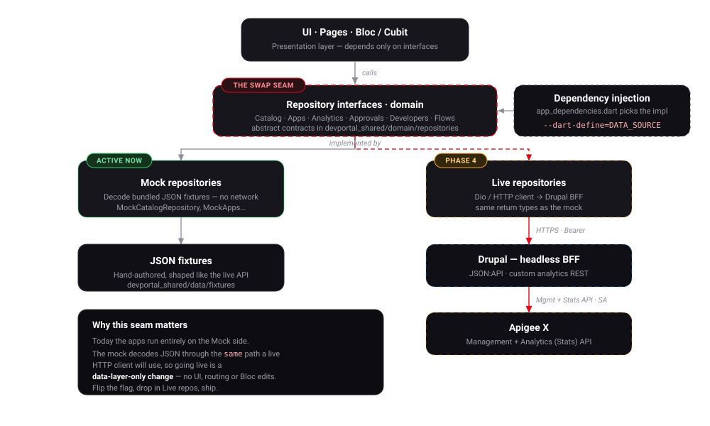

Integration Path
How the mock becomes live: the repository-swap seam, the Drupal BFF, Apigee X APIs, and ForgeRock identity.
Bottom line: going live is a data-layer-only change. The UI, routing, and Bloc layers depend on repository interfaces; today a Mock implementation satisfies them, tomorrow a Live implementation does. Selecting which one is a single build-time flag. Nothing above the data layer changes.
The swap seam#

The clean-architecture boundary does the work:
- Presentation (pages + Cubits) calls repository interfaces only.
- Two implementations satisfy each interface:
Mock…Repository(decodes bundled JSON fixtures) and, later,Live…Repository(HTTP → Drupal → Apigee X). - The composition root (
app_dependencies.dart) chooses which to inject, keyed on a compile-time define.
# today — the only wired path
flutter run -d chrome --dart-define=DATA_SOURCE=mock
# phase 4 — same app, live data
flutter run -d chrome --dart-define=DATA_SOURCE=live --dart-define=API_BASE=https://portal-api.example.com
Why the switch is cheap#
The mock isn't a throwaway. It already decodes JSON into the same domain entities with the same return types a live client will produce. The live repository only changes where the JSON comes from — a network fetch instead of a bundled asset:
// Mock (today)
class MockCatalogRepository implements CatalogRepository {
@override
Future<List<ApiProduct>> products() async {
final raw = jsonDecode(catalogFixtureJson) as List;
return raw.map((e) => ApiProduct.fromJson(e)).toList();
}
}
// Live (Phase 4) — same interface, same entity, same parsing
class LiveCatalogRepository implements CatalogRepository {
LiveCatalogRepository(this._client);
final ApiClient _client; // Dio/http wrapper, base URL + bearer token
@override
Future<List<ApiProduct>> products() async {
final raw = await _client.getJson('/jsonapi/api_products');
return (raw as List).map((e) => ApiProduct.fromJson(e)).toList();
}
}
Because ApiProduct.fromJson is shared, the contract is enforced in one place. If
the live payload shape matches the fixtures, no page, Cubit, or test changes.
The live request chain#
When DATA_SOURCE=live, a repository call travels:
- Live repository → builds an HTTPS request with the developer's bearer token.
- Drupal BFF (
JSON:APIfor catalog/apps/keys; custom REST for analytics) receives it, authorizes via the federated session. - Drupal → Apigee X using the GCP service account: the management API for products/apps/keys/developers, the stats API for analytics (which the custom endpoint reshapes into the dashboard's series).
- The response flows back up; the repository maps it to domain entities; the Cubit emits state.
Why a BFF instead of calling Apigee directly
The Flutter apps never hold the Apigee service-account credentials, never see raw management-API shapes, and never run analytics aggregation in the browser. Drupal centralizes auth, reshaping, and caching — and the Apigee Developer Portal Kit already implements most of the catalog/app/key surface.
Identity integration#
Identity rides the same phased switch, in the auth layer:
| Today (mock) | Phase 4 (live) | |
|---|---|---|
| External | Continue with SSO → demo dev@example.com |
OIDC Auth Code + PKCE vs ForgeRock |
| Internal | Hardcoded admin / passWORD1234# |
Corporate SSO via ForgeRock → IAP |
| Token use | None | Bearer token on every BFF call |
| Mapping | Fixture developer | ForgeRock → Drupal user → Apigee developer |
AuthCubit is the only place that changes: the stub is replaced by a real OIDC
client (e.g. flutter_appauth / an oidc package), and the resulting access token
is attached to the ApiClient used by the live repositories.
Login is not key issuance
Signing in proves who the developer is. It does not mint API keys — those are created when an app is registered, and belong to the app. Keep the two flows separate in code and in the UI.
Contract-first, so mock and live agree#
The fixtures are the de facto contract today. Phase 3 promotes them to an explicit OpenAPI document for the Flutter ↔ Drupal API. That document becomes the shared truth: the mock fixtures validate against it, and the live Drupal endpoints implement it. Drift is caught at build time, not in production.
Integration checklist (Phase 4)#
- [ ]
ApiClient(Dio) with base URL from--dart-define, bearer interceptor, timeout + retry, typed error mapping. - [ ]
Live…Repositoryfor each interface, returning the same entities as the mock. - [ ] DI branch in
app_dependencies.dartonDATA_SOURCE. - [ ]
AuthCubitreal OIDC (Auth Code + PKCE); token piped intoApiClient. - [ ] Error/empty/loading states verified against live latency and failure modes.
- [ ] Contract tests: fixtures and live responses both validate against the OpenAPI.